Présentation de l'interface d'administration des files d'impression
Accéder à l'interface d'administration
Depuis le Menu principal de l'interface d'administration, dans la section Exploitation, cliquez sur Files d'impression, groupes de files & pools pour accéder à l'interface de configuration des files :
Typologie des files
L'interface Files d'impression comporte 3 onglets permettant d'accéder à l'administration :
-
des files d'impression ;
-
des groupes de files ;
-
des pools de travaux.
Par défaut, l'interface d'administration des Files d'impression affiche la liste des files contrôlées par Watchdoc. Vous pouvez filtrer cette liste en fonction du type de file que vous souhaitez afficher :
-
Contrôlées : liste des files d'impression réseau actives et contrôlées par Watchdoc ;
-
Désactivées : listes des files volontairement retirées du contrôle de Watchdoc ;
-
Physiques: liste des files d'impression physiquement associées à un périphérique d'impression ;
-
Virtuelle : liste des files utilisées dans le cadre de l'impression à la demande. Ces files n'existent pas physiquement mais servent à recueillir temporairement les travaux d'impression en attendant que l'utilisateur choisisse son périphérique d'impression. Dès que l'utilisateur débloque ses impressions sur un périphérique précis, la file virtuelle transfère les travaux vers la file physique ;
-
Locales : liste des files d'impression locales
 File d'impression locale : file d'impression d'un périphérique non connecté au réseau. Un agent Watchdoc installé localement sur le périphérique collecte et renvoie les données d'impression à Watchdoc. contrôlées par Watchdoc. Ces files sont également désignées sous l'appellation Files personnelles ;
File d'impression locale : file d'impression d'un périphérique non connecté au réseau. Un agent Watchdoc installé localement sur le périphérique collecte et renvoie les données d'impression à Watchdoc. contrôlées par Watchdoc. Ces files sont également désignées sous l'appellation Files personnelles ; -
Actives : liste des files (contrôlées) en cours de fonctionnement lors de la consultation de l'interface ;
-
En panne : liste des files (contrôlées) présentant un dysfonctionnement lors de la consultation de l'interface ;
-
Consommables : liste des alertes relatives aux consommables
Dans le contexte de l'impression, le consommable désigne les fournitures autres que le périphérique lui-même nécessaire à son fonctionnement, telles que cartouches d'encre, papier ou cartouches d'agrafes, par exemple. des périphériques contrôlés par Watchdoc ; -
VIP : liste des périphériques auxquels on a attribué un statut spécifique afin de les distinguer des autres périphériques.
-
Toutes : total des files contrôlées, gérées par Watchdo, quel que soit leur état.
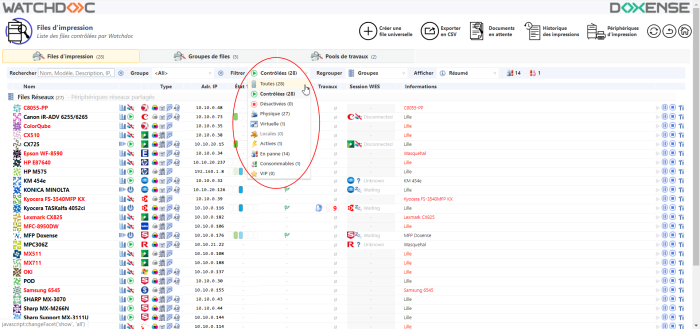
Outils d'affichage des listes
Vous disposez de plusieurs outils pour rechercher et afficher les files :
-
le champ Rechercher permet de saisir un ou plusieurs critères permettant de retrouver une file dans la liste
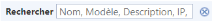
; -
l'outil Groupe permet de restreindre la liste aux files incluses dans un groupe de files spécifique ;
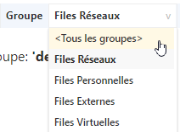
-
l'outil Filtrer permet de filtrer les files en fonction de leur statut ;
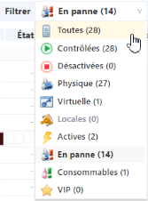
-
l'outil Regrouper permet de regrouper les files en fonction de critères prédéfinis (modèle, pilote, site, etc.) ;
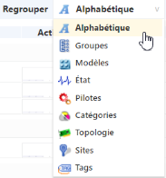
-
l'outil Afficher permet de définir la nature des informations à afficher dans la liste ;
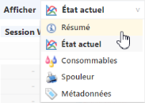
-
le bouton
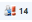
permet d'afficher les imprimantes en panne ; -
le bouton
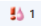
permet d'afficher les imprimantes dont le niveau de consommables est critique :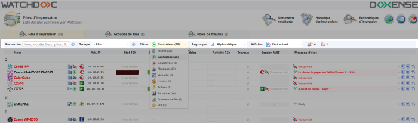
Outils de gestion des files
Quel que soit le mode d'affichage, les files affichées dans ces listes sont dotées des outils suivants :
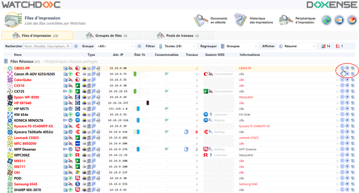
-
le bouton Pause : permet de mettre la file en pause. Dès qu'une file est en pause, le bouton Pause est désactivé et le bouton Redémarrer s'affiche ;
-
le bouton Redémarrer permet de redémarrer une file après sa mise en pause ;
-
le bouton Arrêter permet d'arrêter le contrôle exercé par Watchdoc sur une file. Dès lors, la file arrêtée disparaît de la liste Contrôlées et passe dans la liste Désactivées ;
-
le bouton Configurer permet d'accéder à l'interface de configuration de la file.
Informations relatives aux files
Quel que soit le mode d'affichage, les files affichées dans ces listes sont accompagnées des informations suivantes :
-
l'icone signale une file en mode validation
-
l'icone signale une file virtuelle
-
l'icone signale une file en mode comptabilisation
-
l'icone
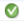
signale une file associée par défaut à un emplacement
D'autres informations s'affichent sous forme d'icones sur la ligne correspondant à chaque file déclarée ou au survol de la souris (file noir et blanc ou couleur, simplex ou duplex, type de format supporté, WES WES (Watchdoc Embedded Solution - Solution Embarquée Watchdoc)
WES est le nom donné à l'interface Watchdoc embarquée sur les périphériques d'impression. Il existe des interfaces spécifiques à chaque périphérique tiers et donc autant de WES que de constructeurs de périphériques. Ces interfaces servent à gérer l'impression depuis le périphérique lui-même. associé, taux de remplissage des cartouches d'encre ou des toners
WES (Watchdoc Embedded Solution - Solution Embarquée Watchdoc)
WES est le nom donné à l'interface Watchdoc embarquée sur les périphériques d'impression. Il existe des interfaces spécifiques à chaque périphérique tiers et donc autant de WES que de constructeurs de périphériques. Ces interfaces servent à gérer l'impression depuis le périphérique lui-même. associé, taux de remplissage des cartouches d'encre ou des toners Le toner (ou encre en poudre) est l'encre utilisée dans les appareils d'impression photo-électrique, comme les imprimantes laser et les photocopieurs, constituée en majeure partie de fines particules de matière plastique et de résine.
Grâce à une charge électrique statique, l'encre est polarisée pour être transférée d'un média à un autre, à savoir de la cartouche vers un rouleau magnétique pour former une image sur le cylindre photo-sensible avant d'être déposée sur la feuille de papier. L'encre est ensuite fixée de façon permanente sur la feuille par chauffage, à environ 180 degrés Celsius, dans l'unité de fusion., éléments de description fournis lors de la déclaration).
Le toner (ou encre en poudre) est l'encre utilisée dans les appareils d'impression photo-électrique, comme les imprimantes laser et les photocopieurs, constituée en majeure partie de fines particules de matière plastique et de résine.
Grâce à une charge électrique statique, l'encre est polarisée pour être transférée d'un média à un autre, à savoir de la cartouche vers un rouleau magnétique pour former une image sur le cylindre photo-sensible avant d'être déposée sur la feuille de papier. L'encre est ensuite fixée de façon permanente sur la feuille par chauffage, à environ 180 degrés Celsius, dans l'unité de fusion., éléments de description fournis lors de la déclaration).
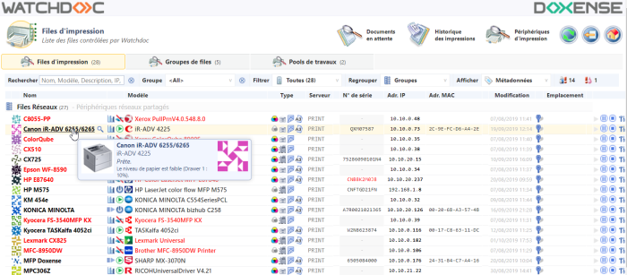